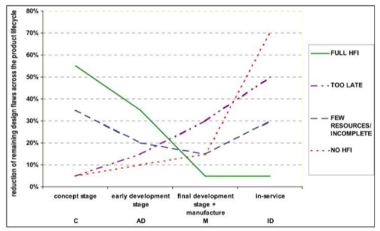
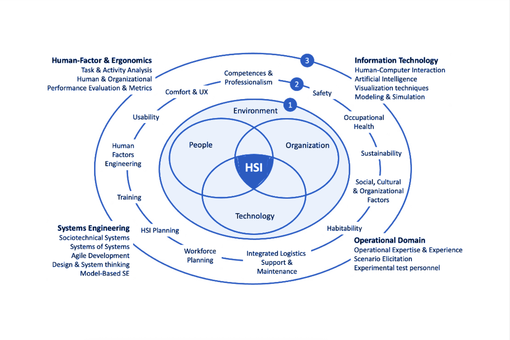
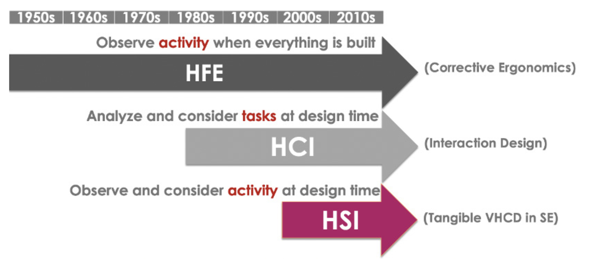
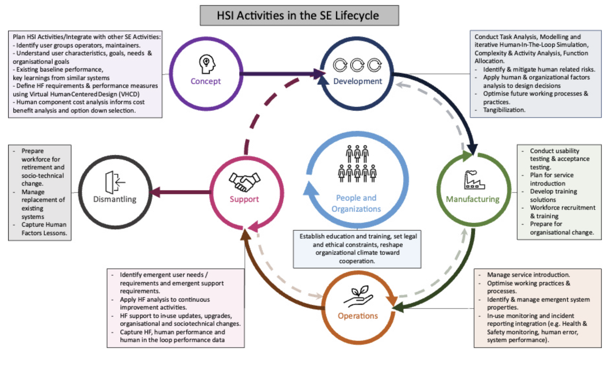

INCOSE International Symposium
Think of the last time a system technically worked — but operationally failed.
The checklist was too long. The interface confused the operator. The team was understaffed. The environment was never considered. The maintenance crew wasn’t trained for this.
None of those are technology failures.
They are human-systems integration failures.
Most SE projects informally handle:
HSI makes this explicit, rigorous, and lifecycle-wide.
It is not a new bureaucratic layer on top of SE. It is an integral part of SE — and it has a name.

Fixing human-related design issues late in the lifecycle costs orders of magnitude more than addressing them early.
Source: HFI DTC/WP 2.7.2/3 (2009)
Human Systems Integration (HSI) is the transdisciplinary sociotechnical and management process used to ensure that the human elements of a system are appropriately addressed and integrated within the wider systems engineering lifecycle.
— INCOSE SE Handbook, 5th Edition (2023)
It integrates Technology, Organisation, and People — the TOP Model — within their Environment.
| Entity | Examples |
|---|---|
| Technology | Hardware, software, tools, interfaces |
| Organisation | Processes, governance, culture, teams |
| People | Operators, maintainers, trainers, public |
| Environment | Physical, social, regulatory context |
Systems are sociotechnical — they always include all four.
“It is particularly important that systems are designed to meet human capabilities, limitations, and goals.”
— HSI Primer Vol. 1
Disciplinary → Siloed
Multidisciplinary → Summative (disciplines work in parallel)
Interdisciplinary → Interactions (disciplines inform each other)
Transdisciplinary → Synthesis (disciplines transform into something new)
↑
That's HSINo single discipline owns the human in a complex system. HSI synthesises across all of them.

Figure 1 — HSI Primer Vol. 1, p. 7
Three contributing communities: HF/Ergonomics · Information Technology · Systems Engineering Plus the Operational Domain at stake.

Figure 2 — HSI Primer Vol. 1, p. 13
| Era | Approach | Logic |
|---|---|---|
| Pre-1980s | HFE — observe activity after the system is built | Fit the human to the technology |
| 1980s | HCI — analyze tasks at design time | Fit the interface to the task |
| 1986+ | MANPRINT — formalise human aspects in US Army SE | Fit the technology to the human system |
| Today | HSI — observe & consider activity at design time, full lifecycle | Design systems that allow humans to be humans |

Figure 3 — HSI Primer Vol. 1, p. 17
| Phase | Key HSI Activities |
|---|---|
| Concept | Identify users & impacts · HF requirements · CONOPS · baseline performance |
| Development | Task & activity analysis · HITL simulation · function allocation · risk mitigation |
| Manufacturing | Usability & acceptance testing · workforce recruitment & training · org. change prep |
| Operations | Service introduction · emergent property monitoring · incident reporting |
| Support | HF analysis for continuous improvement · in-use updates |
| Dismantling | Workforce retirement · sociotechnical change · capture lessons learned |
Task = what is prescribed (the procedure, the checklist)
Activity = what is effectively performed (what people actually do)
People adapt. Procedures drift. Unexpected events happen.
HSI aims to close the gap — by observing real activity, not just specifying tasks.
Key method: Human-In-The-Loop (HITL) simulation — test real human behaviour against the system before it is built.
Who — or what — does each function: human or machine?
This is where automation decisions live. And where they go wrong when HSI is absent.
A checklist of human considerations — tailor to your project’s nature and risk level. None should be dismissed without a reason.
The Human Systems Integrator coordinates across:
Practitioners arrive via: Human Factors · Systems Engineering · Psychology · Cognitive Science · Engineering disciplines
Few specialist degrees exist.
Most HSI practitioners come via non-traditional routes — SE people trained in HF, or HF people embedded in SE projects.
Scale your HSI effort to:
HSI must coordinate with SE activities throughout the lifecycle — not sit alongside them as an optional add-on.
Performance Optimise the whole sociotechnical system — not just the hardware or software.
Risk Catch human-related issues early. Safety incidents, health damage, and loss of life are all HSI failures with legal, ethical, and financial consequences.
Cost Reduce lifecycle costs. Rework and operational failures are expensive. Early HSI investment pays back.
Time Reduce programme time overruns. Fewer surprises during test and operations.
Organisationally: HSI-aware workplaces show better employee performance, reduced silos, and skills that transfer across project portfolios.
HSI is commonly seen as an added expense because developers don’t always reap the operational benefits.
The adoption gap is real. Making the value visible early is part of the HSI practitioner’s job.
“Whatever notions or methods are implemented in a specific project, the final objective of HSI is to design and to operate systems that allow humans to be humans.”
— HSI Primer Vol. 1
Emerging pressures that make this urgent now:
Mission: Ensure all design and engineering disciplines include human and sociotechnical integration to enable system performance.
~500 members worldwide
Academia · Government · Industry
Aerospace · Space · Defence · Automotive · Transport · Telecoms · Healthcare
What the WG produces:
| Year | Event |
|---|---|
| 2019 | 1st HSI International Conference |
| 2020–2022 | International Workshops |
| 2021 | 2nd HSI International Conference |
| 2023 | Regional Workshops — Biarritz · London · Virtual |
| 2024 | 3rd HSI International Conference — Jeju, South Korea |
| 2025 | 4th HSI WG International Workshop — Virtual |
| 2026 | HSI WG Regional Workshops (add details) |
| 2027 | 4th HSI International Conference — alongside IEA Symposium (add details) |
Placeholder — fill in before the symposium
HSI Workshop 2026 Date · Location · Registration link
HSI Conference 2027 — co-located with IEA Symposium Date · Location · Call for papers / abstracts
WG General Meetings: 3rd Wednesday of every other month (July · Sept · Nov)
All levels of contribution welcome: present, write, review, or simply show up.
| hsi@incose.net | |
| linkedin.com/company/incose-hsi | |
| Community | connect.incose.org |
| YouTube | youtube.com/@INCOSE_HSI_WG |
| Free Primer Vol. 1 | INCOSE Member Portal |
The HSI WG exists because no single discipline owns the human in a complex system.
We need systems engineers at the table — and that means you.
| What | Transdisciplinary SE approach — People, Technology, Organisation, Environment |
| Why | Performance · Risk · Cost · Time · Human well-being · Ethics |
| When | Whole lifecycle — concept through dismantling |
| How | HCD + HITL simulation + agile iteration + 13 perspectives |
| Who | HSI practitioners alongside SE teams, with users in the loop |
| Ethic | Design systems that allow humans to be humans |
Start today: Download HSI Primer Vol. 1 free from the INCOSE portal. Come to a WG meeting. Bring a colleague.
HSI Primer Vol. 1 — INCOSE HSI Working Group (2023)